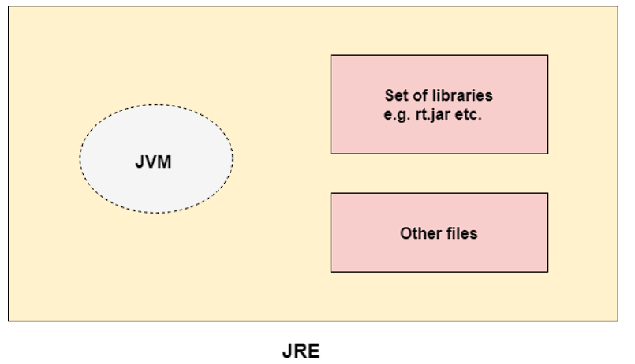
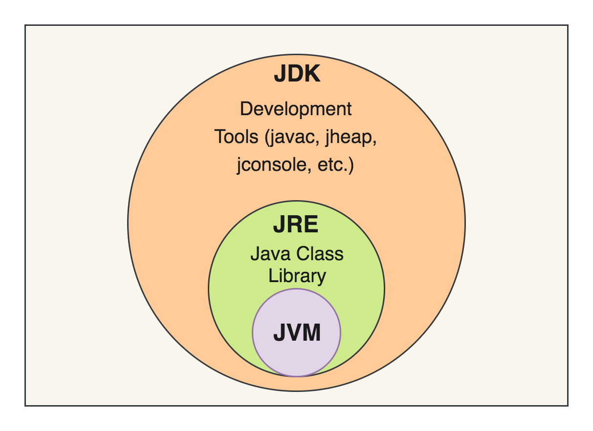

Java is a programming language and a platform. Java is a high level, robust, object-oriented and secure programming language. Java was developed by Sun Microsystems (which is now the subsidiary of Oracle) in the year 1995. James Gosling is known as the father of Java. It was named as Oak before naming it as Java as it faced some copyright issues.
Java is a widely-used programming language for coding websites and Android and iOS applications. Java is a multi-platform, object-oriented, and network-centric language that can be used as a platform in itself. It is a fast, secure, reliable programming language for coding everything from mobile apps and enterprise software to big data applications and server-side technologies.
Now the question arises: What is platform?
Answer is that any hardware or software environment in which a program runs, is known as a platform. Java is having it's own runtime environment(JRE) and API. Hence it is called as platform.
After all this, we will now look at the applications of the Java in various fields. Some of them are -
But why do we use JAVA? Why only JAVA and not some other language ?
Let's highlight some of its characteristics -The main parts of Java’s Object-Oriented Programming(OOP) concepts include abstraction, encapsulation, inheritance and polymorphism. Java OOP concepts let us create working methods and variables, then re-use all or part of them without compromising security. Grasping the OOP concepts is key to understanding how Java works.
Java implements OOP concepts as follows:-
Java is a popular programming language used for building applications that run on multiple platforms. It is known for its "write once, run anywhere" philosophy, meaning that code written in Java can be run on any device or operating system that has a Java Virtual Machine (JVM) installed.
The JDK is a software development kit used for developing Java applications. It includes the Java compiler, which is used to compile Java source code into bytecode that can be executed by the JVM. The JDK also includes other tools such as the Java debugger and JavaDoc, which is used for generating API documentation.
JDK is an implementation of any one of the below given Java Platforms released by Oracle Corporation:
The JRE is a software package that provides the runtime environment for Java applications. It includes the JVM, which is responsible for executing Java bytecode, as well as the Java class library, which contains pre-built classes and methods that can be used by Java applications.
JRE is an acronym for Java Runtime Environment. It is also written as Java RTE. The Java Runtime Environment is a set of software tools which are used for developing Java applications. It is used to provide the runtime environment. It is the implementation of JVM. It physically exists. It contains a set of libraries + other files that JVM uses at runtime. The implementation of JVM is also actively released by other companies besides Sun Micro Systems.
The JVM is a virtual machine that runs Java bytecode. It acts as an interpreter between the Java application and the underlying hardware and operating system. The JVM is responsible for converting bytecode into machine code that can be executed by the computer's processor.
Understanding the difference between the JDK, JRE, and JVM is important for developing and running Java applications. The JDK is used for developing applications, while the JRE provides the runtime environment for those applications. Both the JDK and JRE rely on the JVM to execute Java bytecode.
After we have seen all the theory, now let's start with the programming part with a small and a basic program in JAVA.
So in the above code, we use an access specifier called "public". This defines the access that a user have to a specific class or function. After that, we have used the keyword 'class' along with the name of the class which specifies that a class has been declared. Then we have declared a function inside the class as static void main which specifies that the function is static in nature. In the program, 'void' is the return the type of the function meaning that the function will return no value after it's execution is completed. 'String[] args' means an array of sequence of characters (Strings) that are passed to the 'main()' function. Now we have a display line as 'System.out.println()' which means as we are calling System class and println() function from java.lang package.and printing a general display message of "Hello Everyone." and after that the purpose for what we are writing the java code i.e. "Finding the sum."
In the subsequent line, we have declared a variable named as 'a' and 'b' with assigned value of 10 and 20 respectively of type int i.e. integer value.Since we are adding the integer values up here, so we will store also the value in a variable of type integer i.e. int; here we have named it 'sum' which stores the addition value of a and b i.e. 10 and 20 which is equal to 30. After that we display the value of sum using System.out.println() statement. Then we close scope of all the methods and class used in our program by curly brackets / braces to denote the end of execution of the program.
The output of the above program is given as below.